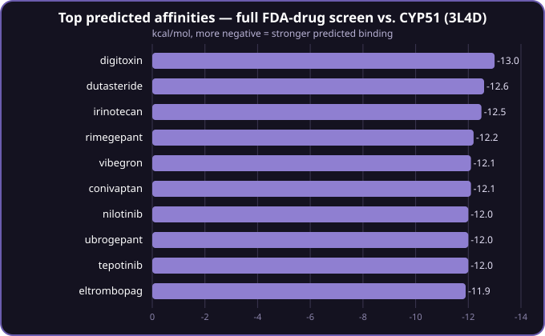
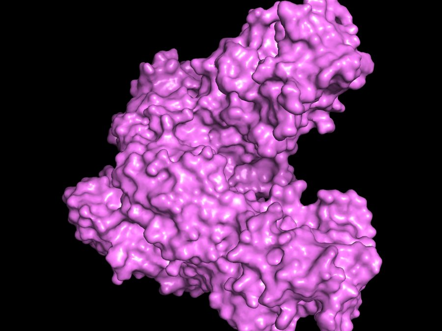
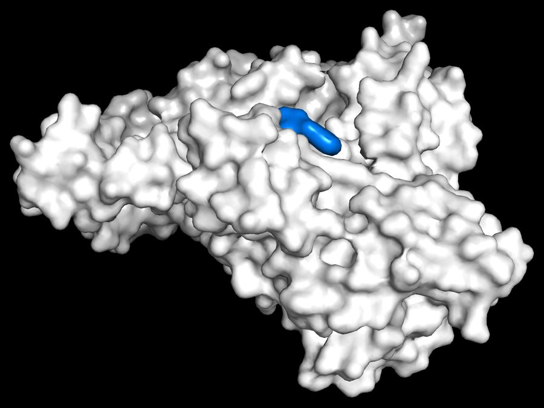
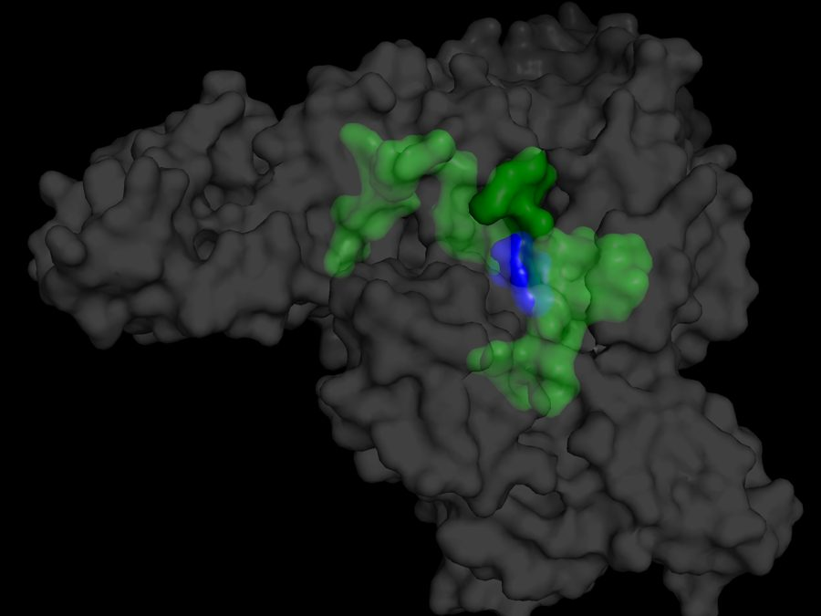

Molecular Docking
Tools and techniques for evaluating how strongly a ligand binds to a protein — the foundation of my drug-repurposing research.
How the pipeline works
Every screen in this project follows the same five stages. The methods tutorials below walk through the software; the research write-ups show it applied to real targets.
- LibraryFDA-approved drugs from DrugCentral
- PrepareConvert each drug into a 3D structure Vina can dock
- Find the pocketfpocket detects cavities on the protein
- DockAutoDock Vina-GPU scores every drug
- CheckInspect poses, search the literature, look up price
Research findings
Screens against three Leishmania targets, and a cross-check of the three. Newest first.
-

Cross-screen analysis
Sticky vs. Specific: Cross-Checking Three Screens
The same drugs kept showing up near the top of more than one target’s results. Is that a real signal, or is Vina’s scoring just enthusiastic about certain molecules?
Read the write-up -
Screen 3 · CYP51
Screening CYP51: A Pipeline Sanity Check
A third Leishmania target, picked partly to test the pipeline against a class of drug I already know the answer for — and it produced the strongest literature-backed hit of the project so far.
Read the write-up -

Screen 2 · Trypanothione reductase
Screening Trypanothione Reductase: The Pivot Away from Specialty Drugs
PTR1’s top hits were all very expensive cancer drugs, so I switched to a completely different Leishmania target — trypanothione reductase — instead of giving up on cheap repurposing.
Read the write-up -

Screen 1 · PTR1
Screening PTR1: A Real Target for Visceral Leishmaniasis
The library and the pipeline finally meet an actual disease target — pteridine reductase 1, from the parasite behind visceral leishmaniasis. First real screening result of the project.
Read the write-up
Methods and tutorials
The setup, in the order I did it. Written for other students learning docking, so jargon is explained.
-

Setup · Installing the software
Installing the software
Step one is getting the software installed: fpocket to detect cavities, PyMOL to visualize molecules, AutoDock Vina to calculate docking strength, and Open Babel to convert between file formats.
Read the tutorial -

Setup · Hello Tools 1
Hello Tools 1
Step two is making sure the software works at the most basic level: using PyMOL to view human serum albumin and warfarin before and after docking, Open Babel to convert the file format, and AutoDock Vina-GPU to run the docking calculation.
Read the tutorial -

Setup · Hello Tools 2
Hello Tools 2
Demonstrates fpocket, the basic workflow, and an explanation of a few of the stats the tool generates.
Read the tutorial -

Setup · Drug library
Building an FDA-Approved Drug Library
Scaling up from docking one ligand at a time to screening almost two thousand real FDA-approved drugs in a single run — building the library, the ligand-prep pipeline, and a first pipeline smoke test.
Read the tutorial